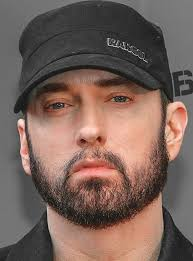
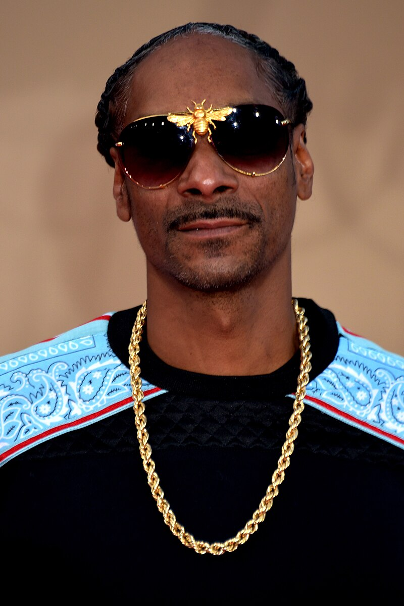
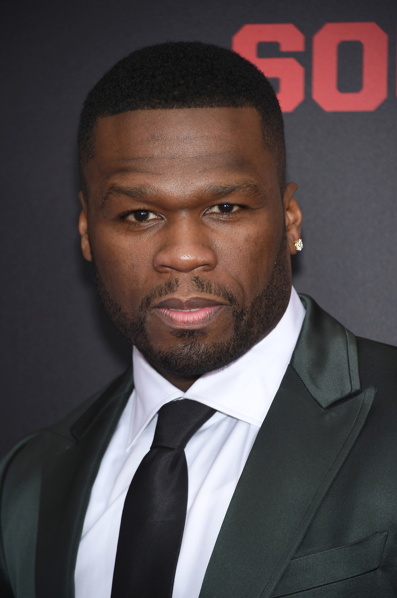

Маршалл Брюс Метерз III (Eminem)
Дата народження: 17 жовтня 1972р.
Місце: Сент-Джозеф, Б'юкенан, Міссурі, США
Роки активності: 1988р. - тепер. час
Жанри: Хіп-хоп, хардкор-реп, реп-рок, гороркор
Альбоми:Music To Be Murdered By - Side B (Deluxe Edition) 2020. Kamikaze. 2018. Revival. 2017. The Marshall Mathers LP2 (Deluxe) 2013. Recovery (Deluxe Edition) 2010. Relapse: Refill. 2009. Encore (Deluxe Version) 2004.

Келвін Кордозар Бродус-молодший (Snoop Dogg)
Дата народження: 20 жовтня 1971р.
Місце: Лонг-Біч, Каліфорнія, США
Роки активності: 1992р. — тепер. час
Жанри: Хіп-хоп, хіп-хоп Західного узбережжя, гангста-реп, джі-фанк, регі
Альбоми: Coolaid. Snoop_Dogg_R&G_Rhythm_and_Gang. Frequency L.S.D. xtoyourmilkyhair. Prayer for the Unborn. Live At Roadburn. Wanted. The Prophecy. Cristal Snow.

Кертіс Джеймс Джексон III (50 Cent)
Дата народження: 6 липня 1975р.
Місце: Саут-Джамейка, Квінз, Нью-Йорк, США
Роки активності: 1996р. - тепер. час
Жанри: хіп-хоп, хіп-хоп Східного узбережжя, гангста-реп
Альбоми: Get Rich or Die Tryin'. The Massacre. Curtis. Before I Self Destruct. Animal Ambition.